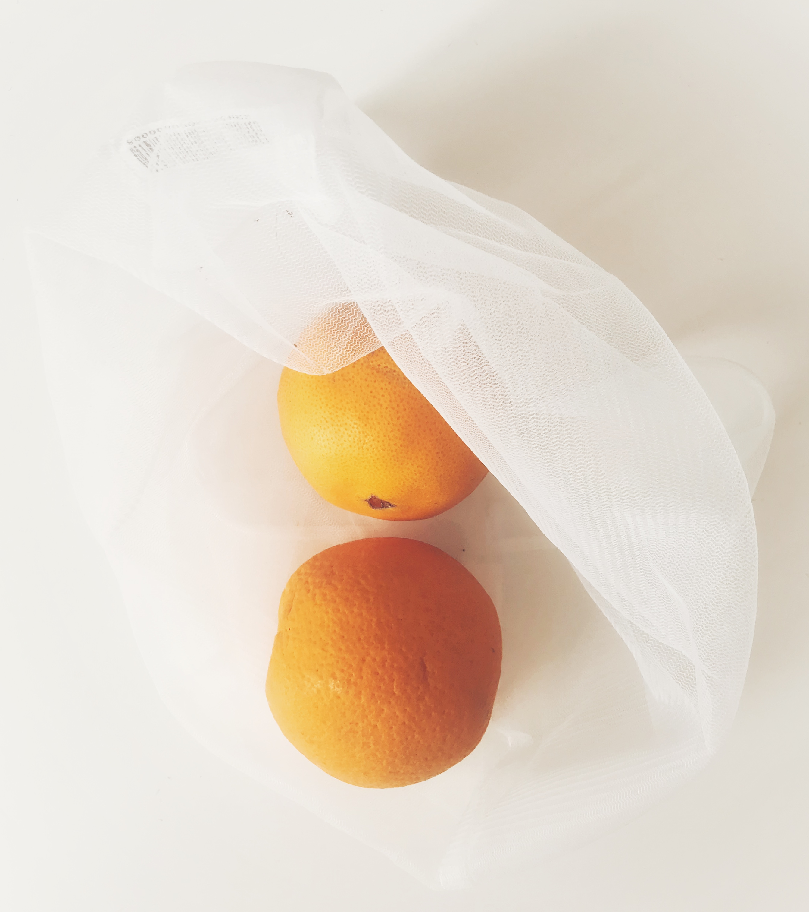

20 Marts, 2020
5 bæredygtige alternativer
Det kan være svært at overskue hvordan man kan leve mere bæredygtigt. Her kommer 5 bæredygtige alternativer du med garanti nemt kan implementere i din dagligdag.
Læs mere..